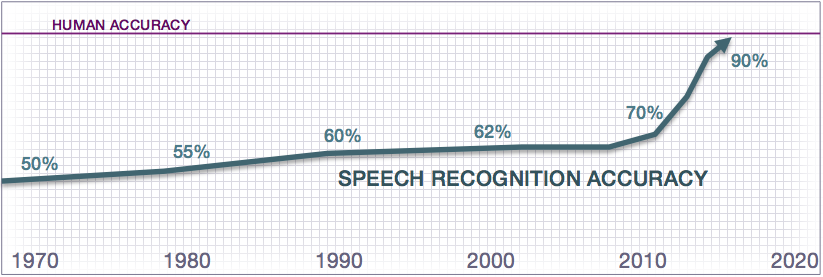

Introduction to Conversational Applications¶
Science fiction has long foretold a future where we routinely use natural human conversation to interact with applications and devices. Only within the past few years, however, has this future started to become a reality. Today, virtual assistants like Siri, Cortana, Google Assistant, and Alexa field many billions of voice and natural language queries every month. New voice-enabled devices like the Amazon Echo and Google Home reside in tens of millions of homes and represent one of the fastest-growing product categories of all time. Consumers worldwide increasingly expect quick assistance and expert advice to be only a simple voice command or chat message away. They expect to invoke these services anywhere: in the office, at home, while driving, when on-the-go, and everywhere in between. Experts agree that we are entering a world where voice and chat assistants will be on-command to assist us with many of our daily tasks.
The Rise of the Conversational Interface¶
This remarkable transformation has surprised even the most jaded AI researchers. For nearly half a century, AI researchers have labored to build speech recognition and language understanding technology that approaches human levels of accuracy — to no avail. Long touted as the future of computing interfaces, these technologies have remained frustratingly out-of-reach for decades. This all began to change in the late 2000s and early 2010s. Fueled by massive amounts of data from exploding mobile internet usage, a long-studied discipline of machine learning called supervised learning began to deliver surprisingly promising results. Long-standing AI research challenges such as speech recognition and machine translation began to see leaps in accuracy which dwarfed all improvements made over the previous decades combined.
As a result of these advances in machine learning, virtual assistants, which had a notoriously hit-or-miss track record in their early years, started to see significant widespread adoption for the first time. This trend began in 2014 and 2015 and accelerated in 2016. Also in 2016, every major consumer internet company launched open developer APIs on nearly every major platform which supports conversational interactions. This includes virtual assistant platforms like Google Assistant, Cortana, and Siri, as well as messaging platforms like Facebook Messenger, Skype, and Slack. It also includes the new generation of voice-enabled devices like Amazon Echo and Google Home. As a result, any company able to build a useful conversational interface can now reach potentially billions of new users across some of the most popular virtual assistant, messaging, and connected device platforms. For all of these new open platforms, human conversation is truly the lingua franca, and any organization which masters the ability to understand the natural language requests of their users stands to gain a huge strategic advantage in the emerging conversational application landscape.
This is not the first tectonic shift in application development. In the mid 1990s, the arrival of the Web saw traditional packaged software replaced by a new generation of browser-based, web applications. Similarly, with the arrival of the iPhone app store in 2008, native mobile applications supplanted web applications as the predominant application paradigm. Conversational applications are now ushering in a third major transformation in development practices, but this one looks to be even more disruptive than its predecessors.
For nearly three decades, application design has centered around the Graphical User Interface, or GUI. During this time, a generation of developers became well-versed in a set of tools, design patterns, and best practices which streamline the building of professional, GUI-based applications. With conversational experiences, all of this changes, and the GUI becomes de-emphasized or absent altogether. As a result, the previous generation of tools and best practices no longer applies. Furthermore, unlike their predecessors, conversational applications rely heavily on AI technology to understand and respond to human language. Prior to now, mastering AI was a never a prerequisite for good application design.
Machine Learning and the Challenge of Building Useful Conversational Applications¶
Conversational applications may seem simple on the surface, but building truly useful conversational experiences is among the hardest AI challenges solvable today. The challenge lies in the inherent complexity of human language. Simple applications which support a very narrow vocabulary of commands are straightforward to build using rule-based approaches, but users nearly always find such applications trivial and tiresome. Applications that succeed in delighting users impose few constraints on a user's vocabulary; they simply let users speak to the application as if conversing with another human. Applications like this, which understand broad-vocabulary natural language, are notoriously complex due to the inherent combinatorial complexity of language, or what's called the curse of dimensionality. In other words, the number of different ways a human might phrase even a simple question can quickly explode into many thousands of variations. The human brain is remarkable at making sense of many trillions of language variations in a fraction of a second with near-perfect accuracy. This same feat is all but impossible for today's most advanced AI technology.
In the past few years, machine learning approaches, namely supervised learning and deep learning, have proven effective at understanding natural language in a wide range of broad-vocabulary domains. To date, large-scale supervised learning is the only approach to yield truly useful conversational applications embraced by millions of users. All of today's most widely used conversational services — Cortana, Siri, Google Assistant, and Alexa — rely on large-scale supervised learning. The two key ingredients of supervised learning systems are high-quality, representative training data, and state-of-the-art algorithms. If the training data reflects the range of user inputs and outputs the application experiences during normal usage, then the algorithms can learn how to recognize the important patterns in the data which dictate how to interpret each request.
It is important to remember that for supervised learning, any application is only as smart as its underlying data. No machine learning technology that exists today is capable of demonstrating intelligence not already reflected in its training data. To build a useful conversational application, it must first be possible and practical to collect training data that comprehensively illustrates the desired usage behavior. For applications where representative training data is abundant, advanced multi-layered neural network techniques like deep learning can likely be enlisted to give impressive results. For applications with modest amounts of data, a range of conventional machine learning techniques can likely be employed to deliver acceptable performance.
For language understanding applications, thousands or millions of training examples are typically required in order to illuminate the large number of language permutations which appear in actual user natural language requests. While AI futurists envision that someday general purpose or 'strong' AI may enable broad vocabulary language understanding out-of-the-box without requiring domain-by-domain training, today's most effective AI requires each application domain to have its own set of representative training data.
Faced with the challenges of conversational interface design and the need for sufficient quantity and quality of training data, developers and companies struggle to create reliable and useful conversational applications. In fact, the vast majority of attempts to date have failed. This woeful track record can no doubt be traced to the dearth of tools and best practices companies could use to find the path to success. A new playbook and a new generation of tools is desperately needed to help organizations chart a fruitful course on the new frontier of conversational application design.